How to Collect Addresses, Images, and Evaluate Those Images Using AI Models
This will be a full guide on how to recreate what AI housing team has done this summer using Ogden IA as an example.
Address Collection and Cleaning
First we need to go to Beacon to try and collect a list of addresses. The following link will bring you to Boone County and you need to scroll in on Ogden (West/center). Beacon Map View
We found a tool called Instant Data Scraper that you need for this process. An alternative to this is badly needed as you will see soon, but this application worked for the time being when we had no prior web scraping experience yet. DSPG students for summer of 2024, I beg you to try and scrape Beacon with your own spider before using this tool to save yourself from the cleaning you have to do.
Below I display an image of the Beacon interface then an image zoomed in on Ogden.


Navigate to the buttons towards the top of the screen and find the cursor over a box. This is the select tool that we need to use for selecting properties. There is a limit of how many addresses you can grab at once so below is what it looks like if you try to grab every property at once:

Instead we need to click on this button and select the polygon version.

To avoid the problem of too many addresses I typically select four segments of the town and merge them after exporting to csv files. As you can see below I used the polygon tool to select all parcels north of 216th Street(the large road below my box). The polygon selector has multiple points you can set, just make sure each parcel you want is within the shaded area or on the line then double click to select all parcels.

Notice on the right hand side how all of the parcels you selected show up. This is where we want to scrape the information from. Open the instant data scraper tool from your extensions button (top right). Below you can see how the chrome extension automatically found the information to the right which now has a red marker around it. I deleted all of the columns in this interface except for resultitem because from our experience this holds the parcel number, address, and owner.


Go ahead and export to a csv. The file is automatically saved as beacon.csv so go ahead and rename this file to ogden_n_216_st.csv. This is a temporary name just so you can easily find your Ogden files and know that the first grab was north of this road that we chose. Repeat this process until you have grabbed all of the parcels you desire, you have to close the instant data scraper and open it again for each new grab. Some towns I could scrape in one go while some took four cuts to collect all the data.
Next we are simply merging the csv files. Choose one of the files to be the main one, then go csv by csv to copy and paste into the main csv file. You could make a script to do this for you but honestly it doesn’t take that long, a trick is when you press ctrl + shift + down arrow you can select the entire column. ctrl + down arrow will bring you to the bottom of the csv column in your main file. Leave out the top row that has resultitem. Also all of the boxes have - or #NAME? don’t worry yet there is more in these boxes they are just on newlines.
Rename the main file to ogden_addresses because this in this file we will clean the data then create address links. First in B2 place this function =TRIM(CLEAN(SUBSTITUTE(A2,CHAR(160),” “))). This will reformat the input text to be on one line without hidden characters. Usually your able to double click the bottom right of the cell and it will auto fill all the way down but most of these functions refuse to auto fill so you just need to grab the corner and drag to fill in B to be easily accessible text. Next copy all of the cells in column B and paste as text into column C.
Copy column C into column D. Select all of column D, navigate to the Data tab, then text to columns in data tools. Select delimited then press next, deselect tab then select other and enter - into the box then select next, then finish. This will separate the data by parcel number, address, and owner. I deleted the owner name due to it being unnecessary information.

Finally I noticed address needs to be trimmed so in a new column you can use the function =TRIM(A2) then paste the result as values back into the address column.
Creating Google API Links
What are the Google API Links? Here is an example of the beginning of an address from Grundy Center:
https://maps.googleapis.com/maps/api/streetview?size=800x800&location=303+I+AVE,+GRUNDY+CENTER+IOWA
this is followed by &key=(API Key). Pasting the entire link brings you to an image provided by Google street view if it exists. You could also use latitude and longitude coordinates instead of address but the image you get is not guaranteed to be a front image of the house. Google however, has a built in program to get the front of a house if you enter the address if it can find one.
We will continue to use the file from the previous section. First you need a url_start column to store the first half of the url which is always the same (https://maps.googleapis.com/maps/api/streetview?size=800x800&location=). So in columns G, H, I, I have the url in the previous sentence, City (Ogden), then State (IOWA). Next we need to concatenate the full address with =CONCAT(F2, “,”, H2, ” “, I2). F2 is the house address, H2 is city, and I2 is State which results in 119 W SYCAMORE ST, OGDEN IOWA for my first address. Copy this column into the next and paste as values. Do not forget to try double clicking the bottom right of the cell to auto fill before dragging.
In the next column use =SUBSTITUTE(K2, ” “,”+“) which will replace all the white space with + which is neccesary for the link. Again paste as values into the next column. Next =CONCAT(G2,M2) will combine what is my url_start column and my full_address_+ column to get the entire url needed to run through my Google API scraper.Finally we need to place the values of this last column I named url_full into the first column so it is easily accessible by the python script.

Now you can grab one of the links from the leftmost column and check that the link works. All I did was copy that part of the link into my browser, added &key=(API Key) and this was my result:

Scrape Google Images
For this section you need to obtain a Google API key to scrape images from the Google street view API. You also need to download R studio or an IDE that can run R code. If you have access to the DSPG Housing repository there is a folder named complete links which has a grab_images.R file. Below is the code for grabbing Google images for Ogden, keep in mind downloading images takes a very long time many of the files of 3k photos have taken me upwards of an hour to download. I also do not know how to control where the image file is uploaded. My current directory is my blog and the images are uploaded there, I assume there is a way to change the directory in R studio.
Some errors I ran into while scraping: Google does not like addresses that are combined such as 123/456 Main St and it will cause an error. Some addresses you pull will start with a # and Google will not accept this. Lines that have the #NAME? error I delete the row. Some addresses I pulled from Ogden did not have an address but just an owner name which caused my program to throw an error. If the address is empty or does not start with a number I delete the row. I manually deleted just over 100 rows from the Ogden set which had missing addresses and was blank or filled in with owner name. This is a good example of why a personalized scraper should be made because while the chrome extension is convenient and fast it pulls back many issues with the data which we may get by scraping ourselves.
# Ogden
og_data <- read.csv(“~/GitHub/Housing/complete links/ogden_urls.csv”)
urls_start <- og_data[, 1]
urls_full <- paste(urls_start, “&key=”, sep = ““)
urls_full_api_key <- paste(urls_full, api_key, sep = ““)
# creates folder and downloads all images
dir.create(“ogden_google_images_folder”)
for(i in seq_along(urls_full_api_key)) {
___ file_path <- file.path(“ogden_google_images_folder”, paste0(“G_OG_”, og_data[i,6], “_.png”))
___ download.file(urls_full_api_key[i], file_path, mode = “wb”)
___ print(file_path)
___ print(i)
}
The only changes to the above code is that you must change the path to your CSV file, where og_data[, num] the number must be changed to the column in the CSV with the full url if it is not in the first column already and the second instance changed to where the address column is, names of image export files if you use a different city, source or city within paste0 (convention is source_city_address_ where source is G Google, Z Zillow, Etc and city is OG Ogden, G Grundy Center, etc), and finally you must add an api_key variable with your own api key. In R Studio you can run just the variable name and it will save into your environment. Make sure to delete the API Key from your code before pushing it somewhere public such as GitHub.
Some common errors with the images coming in are as follows: If Google does not have an image it will give you an image does not exist image but this should be easily identified by our AI model through training. Quick note if you retrain the models I show later in this guide only put 2-3 of these error images as to not throw off the model, having 50 or so will make the model think that image has a very high correlation. Next I have had an odd issue where the same image will be used for multiple addresses. This is quite weird because I do not know where the image is getting pulled from. Maybe there is a default image that is getting pulled somehow? But it is not just one image for Grundy Center which has about 3,500 images we pulled I saw anywhere from 10-20% of the images were duplicates with different addresses. There were probably 8-10 different images that were duplicated for different images so this is a big problem that doesn’t always happen but is a mystery to me why this happens. But hey 80-90% good images is a passing grade.
Building a Binary Image Classification AI Model
These are the two videos I used from Nicholas Renotte Video 1 Video 2. The first video shows how to set up Jupyter Labs while the second video explains how his model works. I copied his code but altered it a little for the binary models but quite a bit for the multi model classifications.
To be honest I think the model in the next section can handle binary scenarios but because I do not fully trust that theory so I am going to show the code for the binary models as it is a little different. When I made my first model I used Jupyter Lab which for an experienced programmer it wasn’t horrible to set up the environment but for my teams sake and future DSPG members we switched to Google Colab. Google Colab is an online resource that can be edited by multiple users just as other Google applications.
Access to entire projects are available through our AI Housing team GitHub but I will walk through the house_present.ipynb file. I highly recommend going to our Housing repository in models_algorithm to look at models rather than this guide (download and open in Google Colab) as I think it is much easier to read and follow. First off, ipynb is the extension for Jupyter Notebooks which is python code written in individual cells so that you can run cell by cell rather than the entire program. This is helpful for testing and minor fixes but I suppose these can be written in normal .py (python) files.
Make sure tensorflow, opencv, and matplotlib are downloaded. You can download these libraries with pip install tensorflow. !pip list will display a list of downloaded libraries to check if these are properly downloaded. This next step is vital for all Colab codes:
from google.colab import drive drive.mount(‘/content/drive’)
%cd “/content/drive/MyDrive/Colab Notebooks/house_present_model”
The from section will connect Google drive to Colab. I will explain where images go in the Training the Model section below but keep in mind you will need to download your images to Google drive to train the model. The third line of code is the path to my house_present_model within Google drive so you will need to replace that path with your path to the folder which holds the Google Colab ipynb file and data images. You do not have to worry about this for now follow along with the rest of the code then skip to Sorting Images then Training the Model section to run the code.
I have my imports scattered through the rest of the document but I will list them all now:
import tensorflow as tf
import os
import cv2
import imghdr
from matplotlib import pyplot as plt
import numpy as np
from keras.models import Sequential
from keras.layers import Conv2D, MaxPooling2D, Dense, Flatten, Dropout
from keras.metrics import Precision, Recall, BinaryAccuracy
from keras.models import load_model
As you can see these models are built with Tensorflow and Keras. Next we grab the images which will be in the data folder.
data_dir = os.getcwd()+‘/data’
We want to remove bad images from our image dataset. First go through and delete all images 10 KB and smaller, then delete any files that are not images.
image_exts = [‘jpeg’,‘jpg’, ‘png’]
for image_class in os.listdir(data_dir):
___ for image in os.listdir(os.path.join(data_dir, image_class)):
___ ___ image_path = os.path.join(data_dir, image_class, image)
___ ___ try:
___ ___ ___ img = cv2.imread(image_path)
___ ___ ___ tip = imghdr.what(image_path)
___ ___ ___ if tip not in image_exts:
___ ___ ___ ___ print(‘Image not in ext list {}’.format(image_path))
___ ___ ___ ___ os.remove(image_path)
___ ___ ___ except Exception as e:
___ ___ ___ ___ print(‘Issue with image {}’.format(image_path))
___ ___ ___ ___ os.remove(image_path)
At this point most of the images we have will be fine to use for training the model. To see a sample of the images you can use plt.imshow(img) or plt.imshow(cv2.cvtColor(img, cv2.COLOR_BGR2RGB)) followed by plt.show() to see a properly colored version.
Next we need to separate the data into 0 or 1. The house_present model for example, I have two folders, one with images with no house and one with house images. The model will predict a decimal between 0 and 1 so if the model predicts .79 it will belong to the second category of house images. Below will show a sample of what this looks like.
data = tf.keras.utils.image_dataset_from_directory(‘data’)
data_iterator = data.as_numpy_iterator()
batch = data_iterator.next()
fig, ax = plt.subplots(ncols=4, figsize=(20,20))
for idx, img in enumerate(batch[0][:4]):
___ ax[idx].imshow(img.astype(int))
___ ax[idx].title.set_text(batch[1][idx])
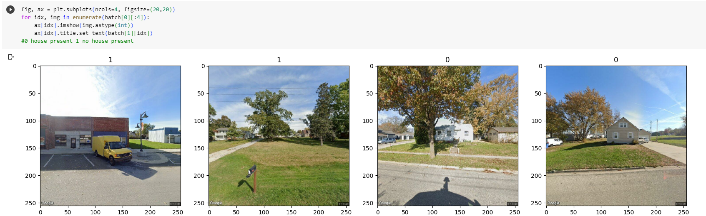
data = data.map(lambda x,y: (x/255, y))
data.as_numpy_iterator().next()
Next we separate the data into training, validation and testing which should be separated by 70%, 20%, 10%. len(data) will show how many images will be used in each train. For my last run I had 7 images.
train_size = int(len(data).7) val_size = int(len(data).2)+1 test_size = int(len(data)*.1)+1
train_size+val_size+test_size
The last line should be equal to len(data) if test or validation is 0 you need to add numbers to the end as I did above. There is a better solution in the following AI model section that I will replace this with if I remember. Next we build the layers of the Neural Network.
model = Sequential()
model.add(Conv2D(16, (3,3), 1, activation=‘relu’, input_shape=(256,256,3)))
model.add(MaxPooling2D())
model.add(Conv2D(32, (3,3), 1, activation=‘relu’))
model.add(MaxPooling2D())
model.add(Conv2D(16, (3,3), 1, activation=‘relu’))
model.add(MaxPooling2D())
model.add(Flatten())
model.add(Dense(256, activation=‘relu’))
model.add(Dense(1, activation=‘sigmoid’))
model.compile(‘adam’, loss=tf.losses.BinaryCrossentropy(), metrics=[‘accuracy’])
model.summary()
Using the model that was just created now it needs to be trained.
logdir=‘logs’
tensorboard_callback = tf.keras.callbacks.TensorBoard(log_dir=logdir)
AUTOTUNE = tf.data.AUTOTUNE
train_ds = train.cache().shuffle(1000).prefetch(buffer_size=AUTOTUNE) val_ds = val.cache().prefetch(buffer_size=AUTOTUNE)
hist = model.fit(train_ds, epochs=20, validation_data=val_ds, callbacks=[tensorboard_callback])
Next we graph the loss and accuracy of the model.
fig = plt.figure()
plt.plot(hist.history[‘loss’], color=‘teal’, label=‘loss’)
plt.plot(hist.history[‘val_loss’], color=‘orange’, label=‘val_loss’)
fig.suptitle(‘Loss’, fontsize=20)
plt.legend(loc=“upper left”)
plt.show()
fig = plt.figure()
plt.plot(hist.history[‘accuracy’], color=‘teal’, label=‘accuracy’)
plt.plot(hist.history[‘val_accuracy’], color=‘orange’, label=‘val_accuracy’)
fig.suptitle(‘Accuracy’, fontsize=20)
plt.legend(loc=“upper left”)
plt.show()
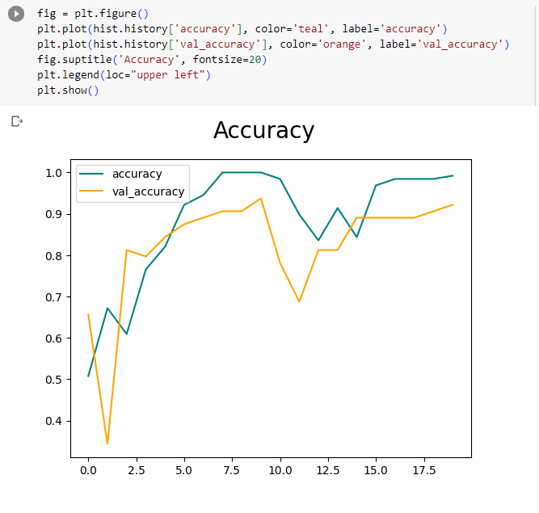
Then we can evaluate the quality of the model
pre = Precision()
re = Recall()
acc = BinaryAccuracy()
for batch in test.as_numpy_iterator():
__ X, y = batch
__ yhat = model.predict(X)
__ print(yhat)
__ pre.update_state(y, yhat)
__ re.update_state(y, yhat)
__ acc.update_state(y, yhat)
print(pre.result(), re.result(), acc.result())
print(f’Precision:{pre.result().numpy()}, Recall:{re.result().numpy()}, Accuracy:{acc.result().numpy()}’)
Then we test the model to see that it works visually. The directory in the following code refers to an image that I chose to test on in the same directory as the ipynb file and the data folder.
img = cv2.imread(‘/content/drive/MyDrive/Colab Notebooks/house_present_model/data/Copy of G_G_108 E AVE_.png’)
resize = tf.image.resize(img, (256,256))
plt.imshow(resize.numpy().astype(int))
plt.show()
yhat = model.predict(np.expand_dims(resize/255, 0))
yhat
if yhat > 0.5:
__ print(f’No house present’)
else:
__ print(f’House present’)
Finally we can save the model. Rename the h5 file to whatever model you are making and it will save to a new folder named models.
model.save(os.path.join(‘models’,‘house_present_classifier.h5’))
Building a Multi-Category Image Classification AI Model
This section is a review of the model that classifies an image when there are three or more categories. This model can also handle only two categories and may work better than the previous model. This model was somewhat based on the prior binary model but was just adjusted to handle more labels. This is also done on Google Colab so we start with mounting to Google Drive.
from google.colab import drive
drive.mount(‘/content/drive’)
Then we load in the images the same way. Make sure the images you will be using is in Google Drive in whatever directory you insert below.
%cd “/content/drive/MyDrive/Colab Notebooks/DSPG Models/vegetation_quality_model”
data_dir = os.getcwd()+‘/data’
We then set the batch size and image size
batch_size = 32
img_height = 180
img_width = 180
data = tf.keras.utils.image_dataset_from_directory(
__ data_dir,
__ image_size=(img_height, img_width),
__ batch_size=batch_size)
We then divide the data as 70% testing, 20% validation, and 10% testing.
train_size = int(len(data)*.7)
val_size = int(len(data)*.2)
test_size = int(len(data)-train_size-val_size)
Next we show some of the images in the data set
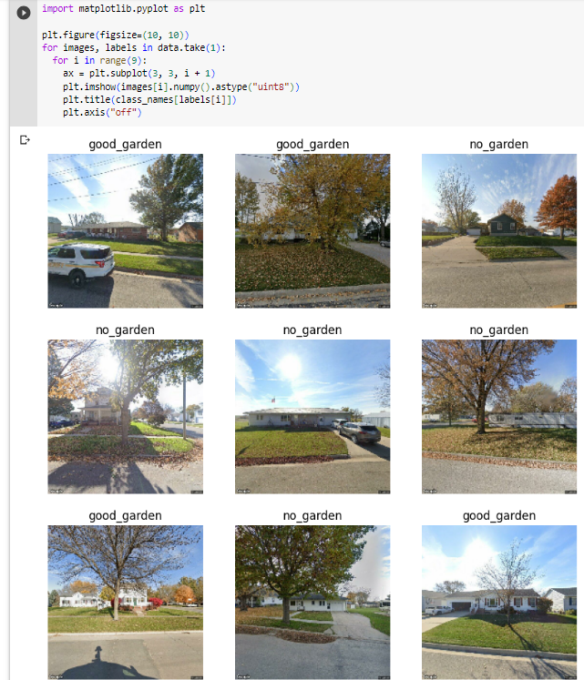
This code makes the training process go very quickly
AUTOTUNE = tf.data.AUTOTUNE
train_ds = train.cache().shuffle(1000).prefetch(buffer_size=AUTOTUNE)
val_ds = val.cache().prefetch(buffer_size=AUTOTUNE)
Then we build the neural network.
num_classes = len(class_names)
model = Sequential([
__ layers.Rescaling(1./255, input_shape=(img_height, img_width, 3)),
__ layers.Conv2D(16, 3, padding=‘same’, activation=‘relu’),
__ layers.MaxPooling2D(),
__ layers.Conv2D(32, 3, padding=‘same’, activation=‘relu’),
__ layers.MaxPooling2D(),
__ layers.Conv2D(64, 3, padding=‘same’, activation=‘relu’),
__ layers.MaxPooling2D(),
__ layers.Flatten(),
__ layers.Dense(128, activation=‘relu’),
__ layers.Dense(num_classes, activation=‘softmax’)
])
model.compile(optimizer=‘adam’,
__ loss=tf.keras.losses.SparseCategoricalCrossentropy(from_logits=False),
__ metrics=[‘accuracy’])
Then we train the model.
epochs=10
with tf.device(‘/device:GPU:0’):
__ history = model.fit(
____ train,
____ validation_data=val,
____ epochs=epochs)
Then we print the Accuracy and Loss
acc = history.history[‘accuracy’]
val_acc = history.history[‘val_accuracy’]
loss = history.history[‘loss’]
val_loss = history.history[‘val_loss’]
epochs_range = range(epochs)
plt.figure(figsize=(8, 8))
plt.subplot(1, 2, 1)
plt.plot(epochs_range, acc, label=‘Training Accuracy’)
plt.plot(epochs_range, val_acc, label=‘Validation Accuracy’)
plt.legend(loc=‘lower right’)
plt.title(‘Training and Validation Accuracy’)
plt.subplot(1, 2, 2)
plt.plot(epochs_range, loss, label=‘Training Loss’)
plt.plot(epochs_range, val_loss, label=‘Validation Loss’)
plt.legend(loc=‘upper right’)
plt.title(‘Training and Validation Loss’)
plt.show()
Then we evaluate the quality of the model.
pre = Precision()
re = Recall()
acc = Accuracy()
for batch in test.as_numpy_iterator():
__ X, y = batch
__ yhat = model.predict(X)
__ yhat = np.array(tf.math.argmax(yhat,axis=1))
__ print(y)
__ print(yhat)
__ pre.update_state(y, yhat)
__ re.update_state(y, yhat)
__ acc.update_state(y, yhat)
print(f’Precision:{pre.result().numpy()}, Recall:{re.result().numpy()}, Accuracy:{acc.result().numpy()}’)
model.save(os.path.join(‘models’,‘vegetation_quality_classifier.h5’))
Again this is much easier to just go into the GitHub for housing and find these models. By the time of finishing this section I now have two more models that produce SHAP and CAM images which take multiple labels to go find towards the end of this project.
Sorting Images
This step follows the Google scraping section directly. Sorting images is a very time consuming process and we have not found a quicker way than manually sorting image by image. I have tried to make this process as efficient as possible with the following method. First make a copy of the image folder so that you have the original images if you need to sort multiple ways. Next go to the image folder and make folders for each sorting method you have. Below is an example of what it looked like while I was sorting for siding. I had a good siding, chipped paint, and poor folder which would be used for training the model. I also had an excess good folder and a delete folder. The excess good folder took a bulk of the good houses because you do not want your data amounts to be too uneven. If you have too many duplicates or too many images in one folder this can cause inaccuracies in the model’s predictions. The delete folder made the sorting go quicker to just throw images into that folder and delete them later rather than deleting bad images as they come.
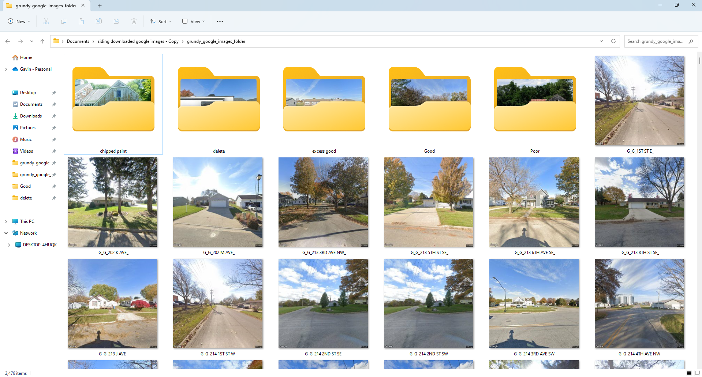
Make a new folder named data and put all of the categories into that folder. The data folder needs to go into the same directory as the ipynb file in google drive. As shown above the data folder needs to be accessible by Google Colab so that it can determine amount of categories and sort accordingly.
Training the Model
If you have a ipynb file set up to create a model and you have sorted images into their respective folders, this step is easy. The following image should be similar to how your directory should look. After linking your Google Colab this left panel will show up with your folders, it is necessary for your data folder to be in the same directory as your ipynb file in Google Drive.
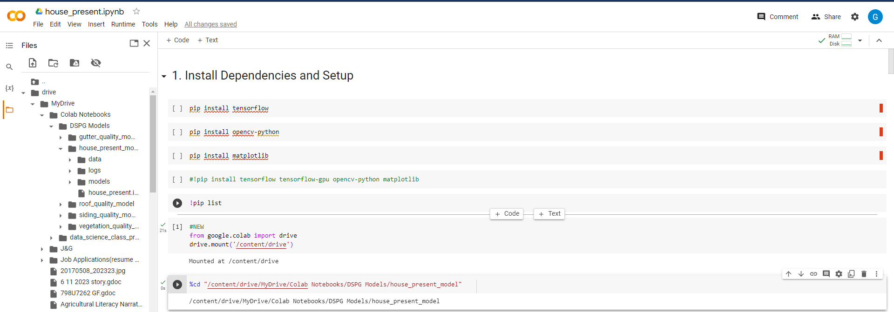
Once your sure the images are accessible for the model all you have to do is run all of the cells. There is an option to run all but I recommend running cell by cell to address errors as they appear. The final line will return the trained model into a new folder named models. You can download the h5 file (the trained model) from Google drive to your local machine to use them in the algorithm I wrote to evaluate images.
Utilizing a Trained AI Model
Make sure you have an IDE that can run python code. I recommend Visual Studio as it can run many languages and has libraries to make python look nice but pycharm is another popular python IDE.
Sorting Image Folder
Before using the python scripts to run your models we need to sort the images from the original Ogden folder into a format that the function can understand. The way I planned the storage of images is as follows: there is a parent folder that holds all images, within the parent folder there are folders for each individual city, and within city folders are folders named by all of the addresses in those cities, and finally within the address folders are images for each address from different sources. Inside of the housing channel folder models_algorithm exists a file image_folder_sorter.py. Each city that I sorted has it’s own algorithm for sorting because they are in different folders going to different folders. I will create one for Ogden below.
img_loc = os.path.expanduser(“~/Documents/downloaded google images/ogden_google_images_folder”)
parent_folder = os.path.expanduser(“~/Documents/parent_folder_holder”)
address_folders = os.path.expanduser(“~/Documents/parent_folder_holder/ogden_address_image”)
files = os.listdir(img_loc)
for img in files:
__ address = img.split(“_“)[2].strip()
__ new_address_folder = os.path.join(parent_folder, address_folders, address)
__ os.makedirs(new_address_folder, exist_ok=True)
__ source_path = os.path.join(img_loc, img)
__ destination_path = os.path.join(new_address_folder, img)
__ shutil.copyfile(source_path, destination_path)
As shown above this algorithm grabs the Ogden image folder then copies it to another folder in which it is sorted by address (which is given by name of each image). Make sure to rename the directories if you have different folder names.
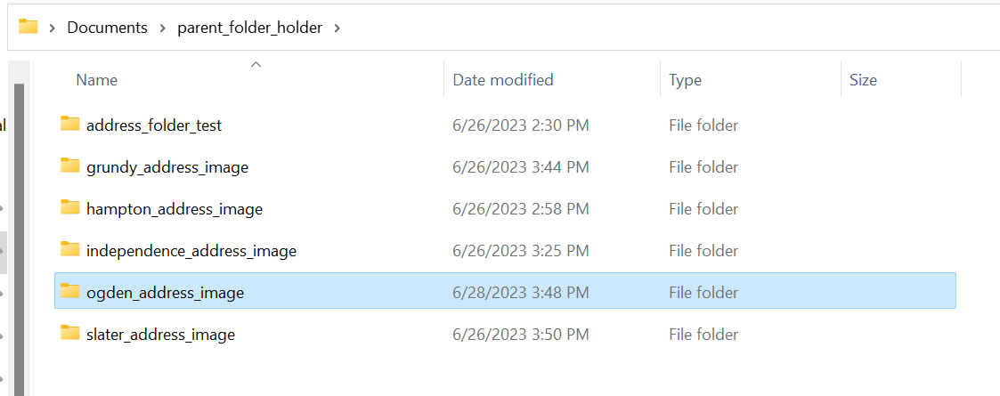
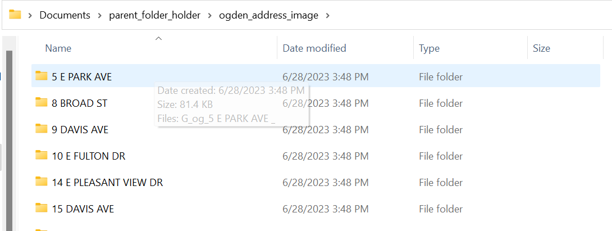
I hope the following graphic is helpful in understanding how the images are stored.
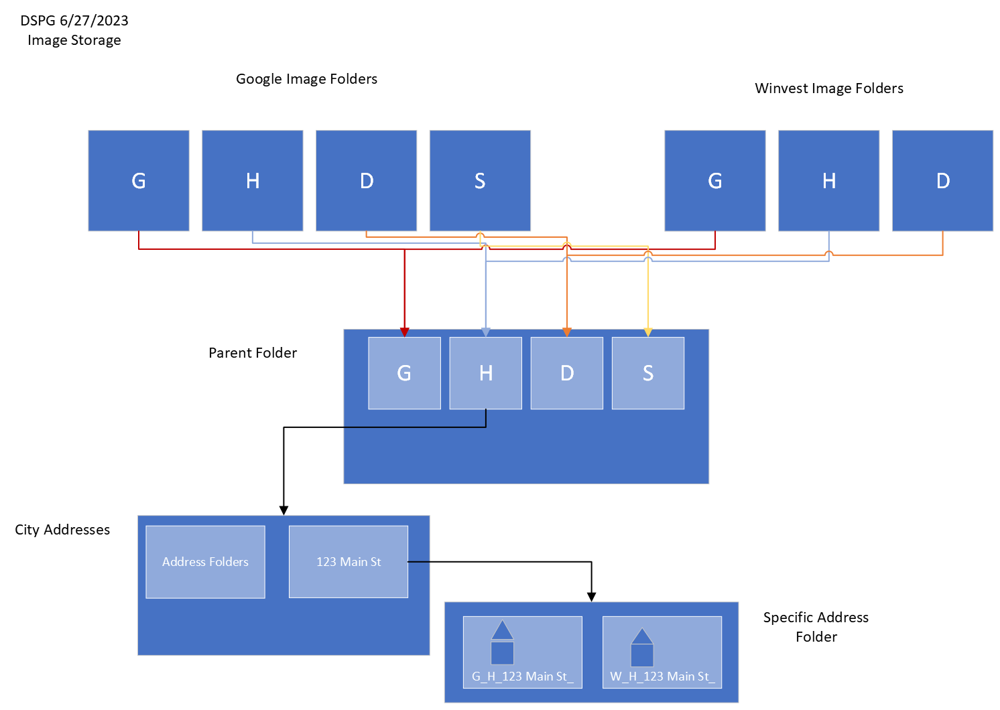
Running Models
In this section I will explain how to use your AI model to evaluate addresses purely through using my python scripts.
How the Program Works
I have two files, city_evaluator.py and house_evaluator.py. city_evaluator reads in images from the method stated above, it navigates to a parent folder which is full of cities, you can navigate to one of these cities to evaluate the images present in it’s folders. For each address folder there may be multiple images of the same address but each of these folders are fed to house_evaluator.
house_evaluator has three models at the beginning, house_present which identifies if there is a house present in an image, clear_image which identifies if there is a clear image of the house (whether it is obstructed or clear), and multiple_houses which identifies if there are multiple images in the picture. These image models were made with the intention of filtering out bad images. If no houses remain the program returns with everything as false. If two good images exist the program randomly selects one of the two.
If an address has an identified good image we will then run it against all our attribute models. Currently there is a vegetation model, siding model, gutter model, and roof model. All of these models need to be better trained to become more accurate but right now serve as good examples of how to build and use AI models for this project. The ipynb files are located in the same location as the h5 files which can be downloaded and opened in Google Colab.
Finally the program returns multiple variables to city_evaluator including whether there is a clear image, name of the test failed if it did, name of image used, whether image was randomly selected, vegetation, siding, gutter, and roofing predictions along with percent confidence. I will discuss how city_evaluator writes this information to a CSV file in the final section.
How to Add Your Model and Other Tweaks
I’m going to list everything you can alter as we go through adding the model here in case anything needs adjusted. This is starting in the house_evaluator.py file. First this screenshot is of the image names and image variable holders being initialized. If you gather images from sources other than what is labeled below you will need to add a variable everyplace these show up. This shouldn’t be too difficult, I only count four locations that you would need to add an image holder variable and a name variable.
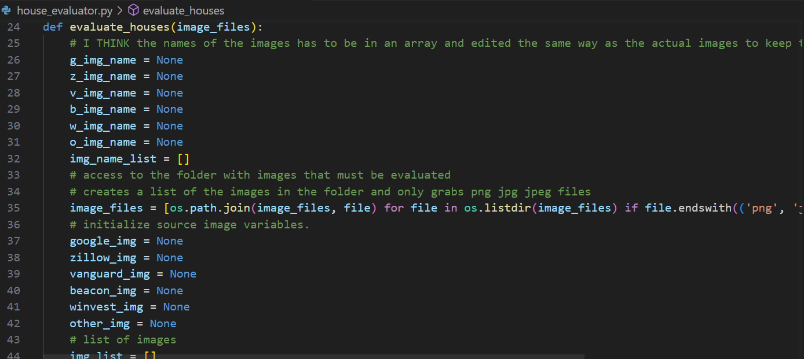
You can skip past all of the house image quality models to what is now about line 220 which is right after the random picker operation. Lets say your new model identifies window quality, if no image remains then you need to add your variable to the list of variables returned here with windows as None and window confidence as 0
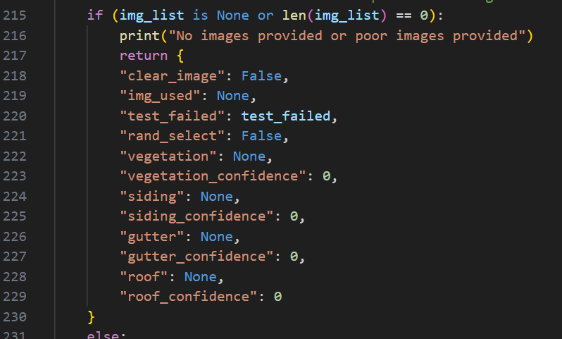
Next scroll past all of the next models (vegetation, siding, gutter, and roof) I left a spot for your window model if this isn’t a hypothetical situation :). Whether your model is binary or has multiple labels changes how you must implement it. For a binary model you can look at the house_present model and the multiple_house model as an example while for a multi option model you can look at any of the attribute models. Below are screenshots of house_present followed by the siding_model, house_present may be misleading but keep in mind it needed to check if an image was present and delete or add so your attribute model will be altered a little from this code and more similair to the start and end of the siding model.
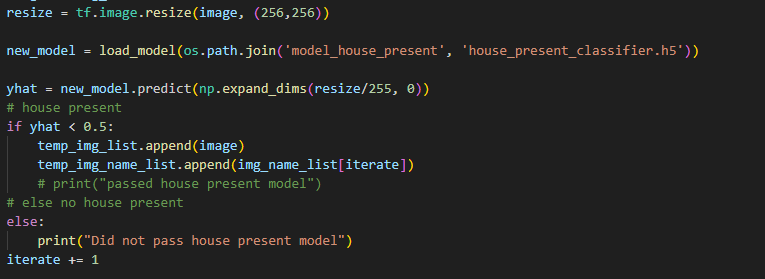
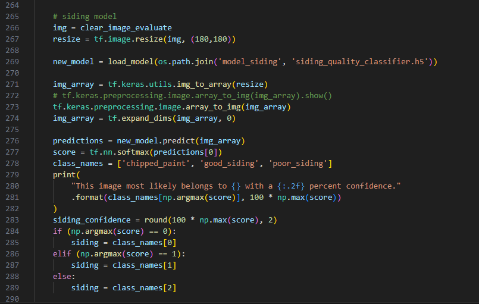
Finally add your models variables to the final return statement.
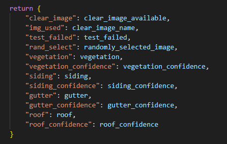
Navigate to city_evaluator.py and update the three spots where it handles variables. This should be simple just copy and paste the lines and change the variable name. An example of the code snippets below: 1. clear_image = attributes.get(“clear_image”)
if (‘clear_image’ in list(df.columns)):
__ pass
else:
__ df[‘clear_image’] = None
- df.at[i,‘clear_image’] = clear_image
Exporting Predictions to a CSV on Address
city_evaluator.py already does the work for you, you just need to add links. First double check that all the variables mentioned in the last section is updated or the new values will not be pulled and written. The folder paths you need to change is the path to the parent folder that contains all of the images (below I show Ogden’s links), then you need to make a csv to hold all of your information. I do not think there is a generic database csv file we have but all of the categories can be copied from an existing one. At minimum the csv file must have all of the addresses from the csv file used to create Google urls or nothing will print.
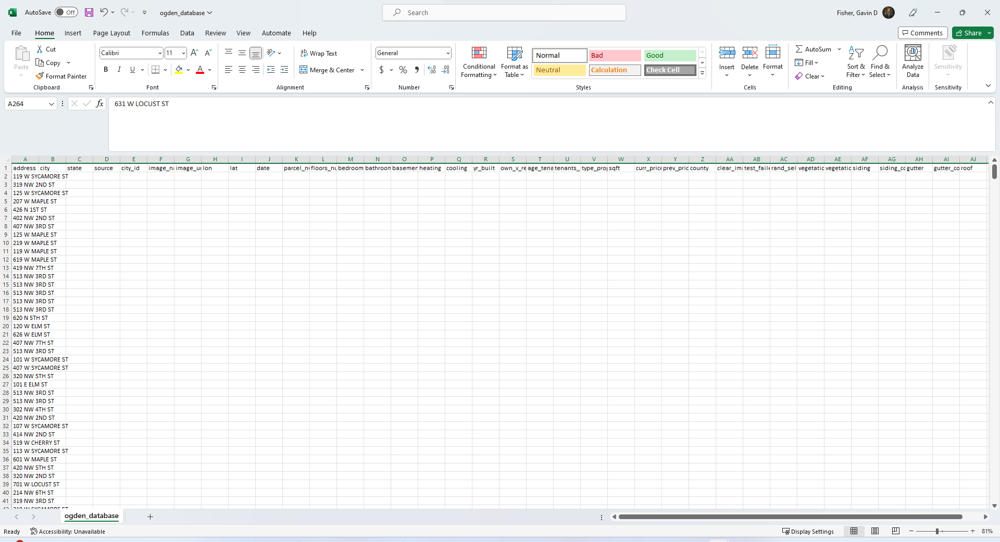
Then update the following lines with your city info and place them with the others in city_evaluator. You can see I just uncomment whichever city I want to run.
main_folder = os.path.expanduser(“~/Documents/parent_folder_holder/ogden_address_image”)
df = pd.read_csv(os.path.expanduser(‘~/Documents/GitHub/Housing/Housing Databases/ogden_database.csv’))
df.to_csv(os.path.expanduser(‘~/Documents/GitHub/Housing/Housing Databases/ogden_database.csv’), index = False)
Now the fun part. If everything worked correctly all you have to do is run city_evaluator and wait for quite a while for all the images to be processed. The terminal will look like below for while it runs through the models.
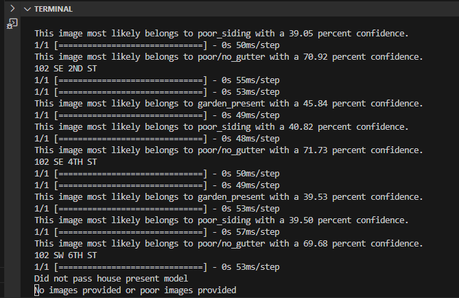
Ogden was smaller so ran a little faster but here is the final result of the current models I have evaluating Ogden:
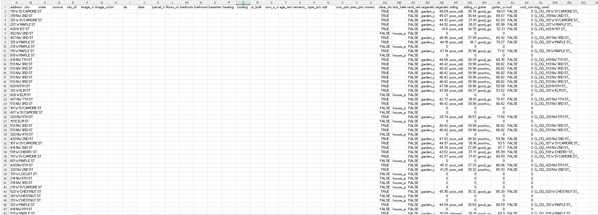
Conclusion
I think this method goes pretty quick overall. Scraping addresses and cleaning goes quick once you have the functions to clean the data, AI models take a while to understand at first but after one or two the process becomes quicker, and implementing models and printing to CSV files take a while to code the first time but alterations are easy. The worst part of this process is sorting images for models. It can take hours and you may have to do it multiple times to increase the accuracy of models.
Steps for the rest of this project not included in this guide:
I will implement a roof model
I will better train the current models
But the best part to go find once it’s done is AI heatmaps which are images that show where in an image a computer is most influenced to make a prediction.